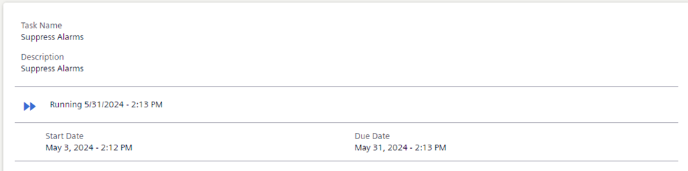
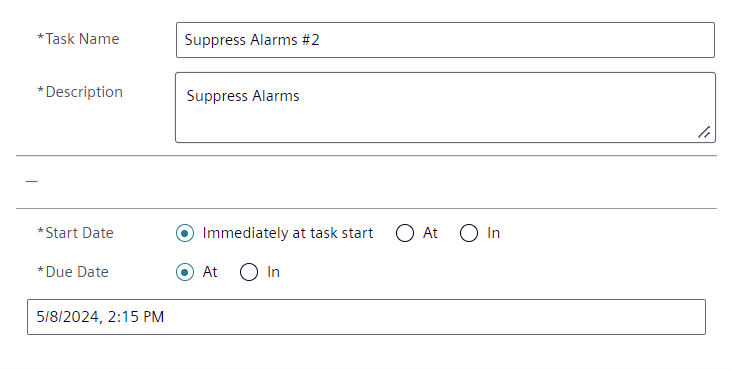

Tasks Settings
When a task is selected in view mode, the task details display the name/description of a task, and when it begins and ends:

To modify these settings, click Edit and switch to edit mode:

Task name
- The task name you enter must be unique.
- The default task name syntax is:
<template name>#<sequential number>, for example,Suppress Alarms #2.
For each task, the status details and due date are also provided below the Description field.
Description
- The default description is taken from the template. It typically indicates what action the task performs, and which are its intended target objects.
- You can modify the description when the task status is
Idleor Failed.
Start date
Sets when the task will begin:
- Immediately at task start: the task starts as soon as the Start command is clicked.
- At: The task starts at the specified date and time after the Start command is clicked. This must be a date in the future.
- In: The task starts after the specified delay has elapsed from when the Start command is clicked. Cannot be zero.
Due date
Sets when the task will end. When a task reaches the specified due date, depending on the template configuration, the task may then be automatically or manually reverted.
- At: The task ends at the specified date and time. It must be after the start date.
- In: The task ends when the specified duration has elapsed from when the Start command is clicked. Cannot be zero.